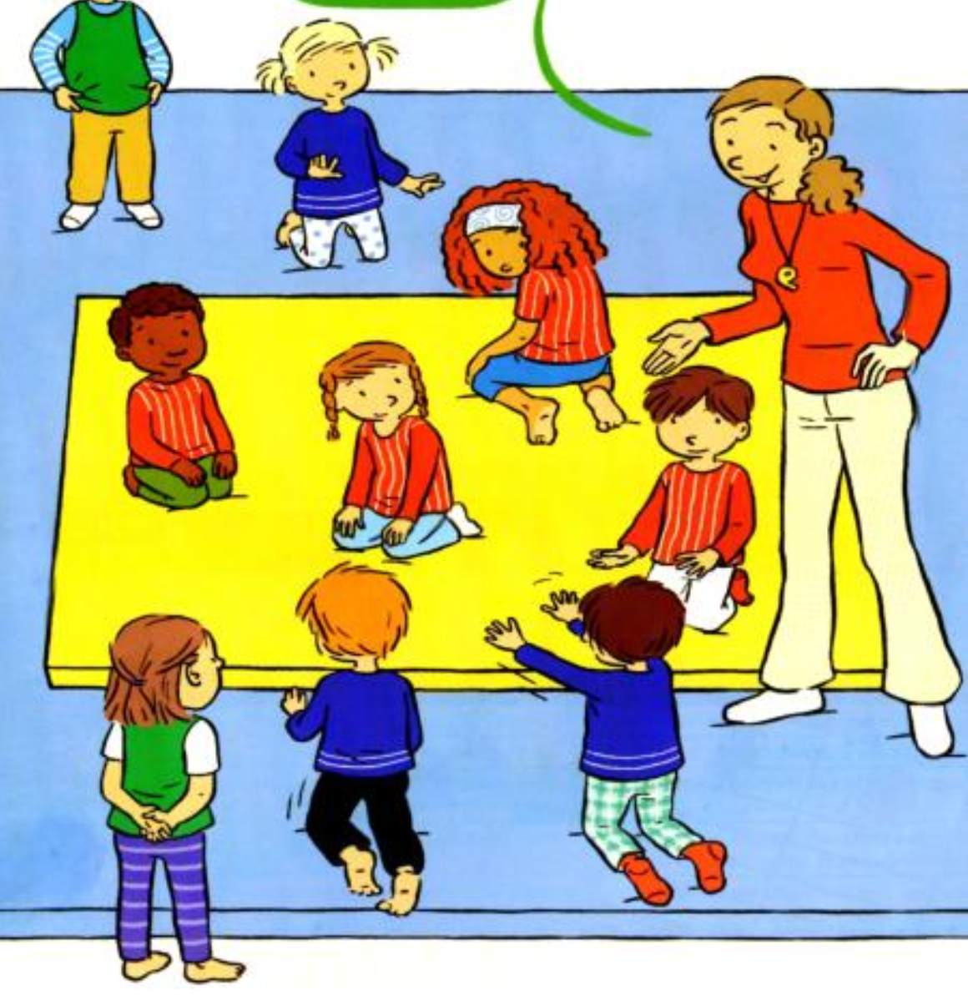

Objectif d'apprentissage
Découverte progressive de la notion d'équipe, prise de conscience d'un projet commun.
But
Les chasseurs doivent sortir le plus d'ours possible de la tanière.
Critères de réussite
- Avoir réussi à sortir le plus d'ours possible en 1 minute 30.
Règles
- Au signal, les chasseurs entrent et essaient d'amener les ours à l'extérieur.
- Les ours sont immobiles à quatre pattes au milieu du terrain.
Organisation
Zone de 4 tapis, deux équipes : ours à quatre pattes et chasseurs debout. Espace de jeu de 6m x 4m, temps de jeu de 1 minute 30.
Modalités d'exécution
- Les chasseurs s'unissent pour sortir les ours en poussant ou tirant.
Évolutions
- Aucune résistance des ours.
- S'associer à plusieurs pour sortir un ours.
- Les ours sont mobiles.